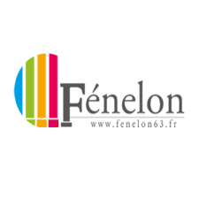
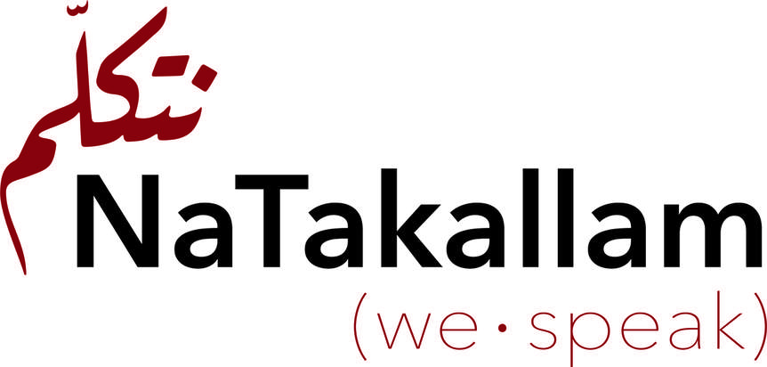

.jpg)

Le Bachelor de l'ECE Paris, d'une durée de trois ans, se concentre sur les domaines du numérique et propose une formation professionnalisante en alternance. La troisième année nous permet de se spécialiser dans des domaines tels que le développement Frontend, Backend, Full Stack, la sécurité IT ou la Data.
Le Cycle Intégré International Anglophone (CII) à l'ISEP Paris, initié en 2020, accueille 30 étudiants aptes en anglais et en sciences pour une préparation de deux ans en sciences fondamentales, techniques et humanités, en vue d'études spécialisées dans le numérique comme l'informatique et la robotique. Toutefois, j'ai quitté ce programme en raison de nombreux problèmes rencontrés au niveau de l'enseignement à l'ISEP, et j'ai trouvé que la formation était beaucoup trop théorique.
Au Lycée Fénelon de Clermont Ferrand, j'ai obtenu mon Baccalauréat avec mention Bien en mai 2022, en me spécialisant en Numérique et Sciences Informatiques (NSI), Physique-Chimie, et Mathématiques. Mon engagement et ma passion pour la NSI m'ont valu une note exemplaire de 20/20 à l'examen du bac de cette matière et un 19/20 au grand oral de NSI. J'ai également étudié l'Anglais et l'Allemand, et choisi les options Anglais Euro et Mathématiques Complémentaire pour enrichir mon parcours. L'exigence académique et l'environnement multilingue du lycée ont été cruciaux pour ma formation scientifique.
Le BIA, ou Brevet d'Initiation Aéronautique, est un diplôme français qui vise à initier les jeunes à la connaissance de l'aéronautique et du milieu aérospatial. Il aborde des thèmes tels que la météorologie, la navigation, l'histoire de l'aviation, et les principes de base du vol. Le BIA est souvent vu comme une première étape pour ceux qui envisagent une carrière dans l'aviation ou l'aérospatiale. Il comprend une formation théorique suivie d'un examen, et inclut des heures de vol pratique en initiation.
J'ai commencé mon éducation en France au collège Jules Romain à Ambert, où j'ai également appris le français. J'y ai obtenu la mention Bien au Brevet des collèges.
J'étais scolarisé à Busan International Foreign School en Corée du Sud, où mon intérêt pour l'informatique a été éveillé. La forte présence de la technologie dans ce pays hyper informatisé a piqué ma curiosité et m'a encouragé à explorer le domaine de l'informatique. C'est grâce à ce séjour en Corée du Sud que j'ai décidé de poursuivre des études en informatique, une décision qui a largement influencé mon orientation académique future.
De 2009 à 2013, j'ai été scolarisé à l'école allemande de Riyadh en Arabie Saoudite. Cette expérience m'a ouvert les portes d'une culture radicalement différente de la mienne. Non seulement j'ai pu plonger au cœur des traditions et des coutumes saoudiennes, mais cela a également énormément enrichi ma culture générale. J'ai pu approfondir ma connaissance sur l'éthique, la culture et l'histoire de cette région, ce qui m'a offert une perspective unique et précieuse sur le monde.
En tant qu'ingénieur en automatisation de test (alternant) chez CEGID, sur l'application ISIE, j'emploie TESTCOMPLETE pour développer et entretenir des tests automatisés. Mon rôle consiste à actualiser régulièrement les scripts de test en fonction des mises à jour de l'application. Je réalise le "name mapping" de chaque élément sur les pages web, rendant les scripts accessibles et intelligibles pour mes collègues. J'accorde une attention particulière à l'optimisation de la recherche d'éléments, en choisissant le XPath le plus efficace, ce qui permet une exécution des tests rapide et fiable. De plus, je travaille en étroite collaboration avec les développeurs, les informant des problèmes de leur côté qui pourraient entraver l'exécution des tests, afin d'assurer une intégration et une qualité logicielle optimales.
Chez NaTakallam, au sein du département Marketing et Tech, j'ai optimisé le référencement SEO et formulé des recommandations pour les futurs blogs. J'ai mis à jour la base de données de la newsletter et créé des modèles de rapports pour les réseaux sociaux. Ma contribution incluait également la génération de contenu en français, l'évaluation de l'expérience utilisateur sur les pages B2C, et le développement d'une page d'analyse individuelle en temps réel pour les étudiants, intégrant des statistiques et connectée au serveur de l'entreprise. Ce stage m'a permis de commencer à acquerire des compétences en WordPress, Elementor, et programmation avec des API.
En tant que représentant d'école, mon rôle principal était d'informer les élèves sur les différentes formations disponibles, en leur présentant des options qui correspondaient à leurs critères de recherche. Je fournissais des conseils personnalisés pour les aider à naviguer dans le paysage éducatif, en veillant à ce qu'ils reçoivent des informations pertinentes et adaptées à leurs besoins spécifiques, ce qui les aidait à prendre des décisions éclairées concernant leur parcours éducatif et professionnel.
Lors de mon stage chez Aviasim Lyon en octobre 2021, j'ai appliqué mes compétences du BIA sur un simulateur professionnel d’Airbus A321, guidé par un pilote chevronné. Cette expérience immersive, alliant théorie et pratique, a renforcé mon désir de poursuivre une carrière dans l'aviation, me donnant un aperçu précieux du métier de pilote et affirmant ma passion pour le domaine aéronautique.
Depuis janvier 2018, en tant que mécanicien moto autodidacte et passionné, j'achète, diagnostique, répare et revends des motos hors service, en me concentrant sur les moteurs 2 temps. J'ai acquis ces compétences seul, motivé par ma passion pour la mécanique. Cette activité, que j'ai commencée dès la troisième et poursuivie jusqu'à la fin du lycée, m'a permis non seulement de développer une expertise technique, mais aussi de gagner de l'argent tout au long de mes années scolaires.
Depuis 2017, je réside en France. J'ai eu l'opportunité de vivre dans divers pays grâce à la profession de mon père, professeur d'économie universitaire. Né en région parisienne, ma famille et moi n'y sommes pas restés longtemps avant de déménager à Munich, en Allemagne, où j'ai entamé mon parcours éducatif dans une école allemande. Après trois ans à Munich, nous avons déménagé à Riyad, en Arabie Saoudite, où j'ai poursuivi mes études primaires à l'école allemande de Riyad. J'y ai vécu de 2009 à 2013, une période formatrice durant laquelle j'ai été confronté à une culture radicalement différente de celle que j'avais connue en Allemagne, bien que continuant mon éducation en allemand. Près de cinq ans en Arabie Saoudite m'ont permis d'apprendre beaucoup sur leur culture et mode de vie.
Nous avons ensuite déménagé en Corée du Sud, à Busan, pour une nouvelle opportunité professionnelle de mon père. C'est là, à la Busan International Foreign School (BIFS), aujourd'hui nommée International School of Busan (ISB), que j'ai découvert l'informatique. Dès le CE2, on m'a initié à l'usage des ordinateurs portables et à tirer parti de la technologie. Au CM1, je me suis intéressé à la programmation grâce au club de robotique de l'école, où j'ai finalement été nommé chef du club. Nous avons terminé dans le top 25 % lors d'un tournoi national.
En 2017, avec la retraite de mes parents, nous nous sommes installés à Ambert, dans le Puy-de-Dôme. J'ai intégré directement la 4e, en raison des différences de niveau scolaire. Bien que français, j'ai dû apprendre la langue en arrivant, ayant toujours parlé anglais à la maison. En France, c'est en 3e que j'ai commencé à développer un intérêt pour l'aéronautique, fasciné par les principes de vol et les technologies associées. J'ai également commencé à m'intéresser à la mécanique, aux motos, aux voitures et à la photographie, explorant ces passions à travers des projets personnels et des activités parascolaires. Le système éducatif français était radicalement différent de tout ce que j'avais connu auparavant, notamment par son manque de focus sur l'informatique au collège et au lycée. Ayant passé tout ce temps en Corée sans même utiliser de cahier, j'avais complètement perdu l'habitude d'utiliser du papier et des livres, et j'ai rapidement dû m'adapter. Après le brevet, j'ai rejoint un lycée à Clermont-Ferrand, me spécialisant en partie en informatique, avec des résultats exceptionnels au Baccalauréat, notamment 20/20 en NSI et 19/20 à mon grand oral sur le cloud.
Actuellement, je poursuis mes études en informatique à Paris, ayant commencé par une classe préparatoire avant de me réorienter vers un bachelor, me permettant de me concentrer davantage sur la pratique plutôt que sur la théorie pure.